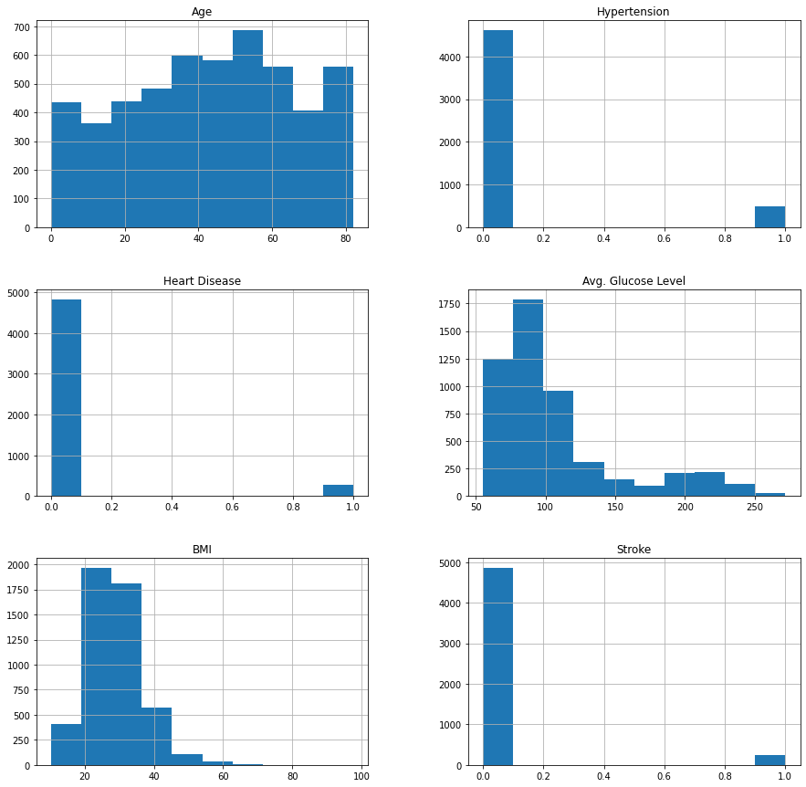
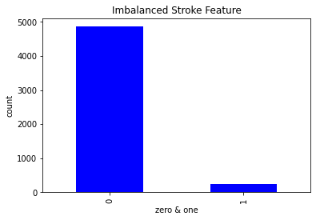
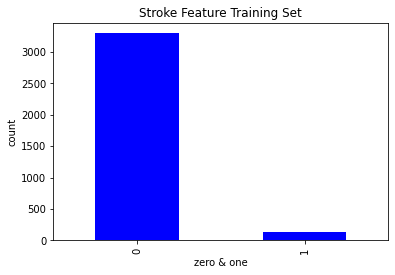

Contents
import pandas as pd
import numpy as np
from sklearn.model_selection import train_test_split, cross_val_score
import matplotlib.pyplot as plt
from sklearn.preprocessing import StandardScaler
from imblearn.over_sampling import SMOTE
from sklearn.metrics import accuracy_score
from sklearn import metrics, model_selection
from sklearn.naive_bayes import GaussianNB
from sklearn.ensemble import BaggingClassifier
from sklearn.tree import DecisionTreeClassifier
data = "https://raw.githubusercontent.com/febyfadlilah/dataset/main/healthcare-dataset-stroke-data.csv"
df = pd.read_csv(data)
df.columns = ["ID", "Gender", "Age", "Hypertension", "Heart Disease", "Ever Married", "Work Type", "Residence Type", "Avg. Glucose Level", "BMI", "Smoking Status", "Stroke"]
#drop ID column
df = df.drop('ID', axis=1)
#plots other feature sets
df.hist(figsize = (15, 15))
plt.show()

#plots Stroke feature
df['Stroke'].value_counts(dropna = False).plot.bar(color = 'blue')
plt.title('Imbalanced Stroke Feature')
plt.xlabel('zero & one')
plt.ylabel('count')
plt.show()

print(df.isnull().sum())
print(df.count())
#removing null values in BMI column
df.dropna(axis=0, inplace=True)
df.reset_index(drop=True, inplace=True)
Gender 0
Age 0
Hypertension 0
Heart Disease 0
Ever Married 0
Work Type 0
Residence Type 0
Avg. Glucose Level 0
BMI 201
Smoking Status 0
Stroke 0
dtype: int64
Gender 5110
Age 5110
Hypertension 5110
Heart Disease 5110
Ever Married 5110
Work Type 5110
Residence Type 5110
Avg. Glucose Level 5110
BMI 4909
Smoking Status 5110
Stroke 5110
dtype: int64
print(df.isnull().sum())
print(df.count())
Gender 0
Age 0
Hypertension 0
Heart Disease 0
Ever Married 0
Work Type 0
Residence Type 0
Avg. Glucose Level 0
BMI 0
Smoking Status 0
Stroke 0
dtype: int64
Gender 4909
Age 4909
Hypertension 4909
Heart Disease 4909
Ever Married 4909
Work Type 4909
Residence Type 4909
Avg. Glucose Level 4909
BMI 4909
Smoking Status 4909
Stroke 4909
dtype: int64
#transforming dataset with dummies variables to replace characters with binary integers
df["Hypertension"].replace([0,1], ["No","Yes"], inplace=True)
df["Heart Disease"].replace([0,1], ["No","Yes"], inplace=True)
df2 = df[["Gender","Age","Hypertension","Heart Disease","Ever Married","Work Type","Residence Type","Avg. Glucose Level","BMI", "Smoking Status","Stroke"]]
gender = pd.get_dummies(df2["Gender"], drop_first=True)
hypertension = pd.get_dummies(df2["Hypertension"], drop_first=True, prefix="HT")
heartdisease = pd.get_dummies(df2["Heart Disease"], drop_first=True, prefix="HD")
evermarried = pd.get_dummies(df2["Ever Married"], drop_first=True, prefix="EM")
worktype = pd.get_dummies(df2["Work Type"], drop_first=True)
residence = pd.get_dummies(df2["Residence Type"],drop_first=True)
smoking = pd.get_dummies(df2["Smoking Status"], drop_first=True)
df3 = pd.concat([df2,gender,hypertension,heartdisease,evermarried,worktype,residence,smoking], axis=1, join='outer', ignore_index=False)
print(df3.head(15))
Gender Age Hypertension Heart Disease Ever Married Work Type \
0 Male 67.0 No Yes Yes Private
1 Male 80.0 No Yes Yes Private
2 Female 49.0 No No Yes Private
3 Female 79.0 Yes No Yes Self-employed
4 Male 81.0 No No Yes Private
5 Male 74.0 Yes Yes Yes Private
6 Female 69.0 No No No Private
7 Female 78.0 No No Yes Private
8 Female 81.0 Yes No Yes Private
9 Female 61.0 No Yes Yes Govt_job
10 Female 54.0 No No Yes Private
11 Female 79.0 No Yes Yes Private
12 Female 50.0 Yes No Yes Self-employed
13 Male 64.0 No Yes Yes Private
14 Male 75.0 Yes No Yes Private
Residence Type Avg. Glucose Level BMI Smoking Status ... HD_Yes \
0 Urban 228.69 36.6 formerly smoked ... 1
1 Rural 105.92 32.5 never smoked ... 1
2 Urban 171.23 34.4 smokes ... 0
3 Rural 174.12 24.0 never smoked ... 0
4 Urban 186.21 29.0 formerly smoked ... 0
5 Rural 70.09 27.4 never smoked ... 1
6 Urban 94.39 22.8 never smoked ... 0
7 Urban 58.57 24.2 Unknown ... 0
8 Rural 80.43 29.7 never smoked ... 0
9 Rural 120.46 36.8 smokes ... 1
10 Urban 104.51 27.3 smokes ... 0
11 Urban 214.09 28.2 never smoked ... 1
12 Rural 167.41 30.9 never smoked ... 0
13 Urban 191.61 37.5 smokes ... 1
14 Urban 221.29 25.8 smokes ... 0
EM_Yes Never_worked Private Self-employed children Urban \
0 1 0 1 0 0 1
1 1 0 1 0 0 0
2 1 0 1 0 0 1
3 1 0 0 1 0 0
4 1 0 1 0 0 1
5 1 0 1 0 0 0
6 0 0 1 0 0 1
7 1 0 1 0 0 1
8 1 0 1 0 0 0
9 1 0 0 0 0 0
10 1 0 1 0 0 1
11 1 0 1 0 0 1
12 1 0 0 1 0 0
13 1 0 1 0 0 1
14 1 0 1 0 0 1
formerly smoked never smoked smokes
0 1 0 0
1 0 1 0
2 0 0 1
3 0 1 0
4 1 0 0
5 0 1 0
6 0 1 0
7 0 0 0
8 0 1 0
9 0 0 1
10 0 0 1
11 0 1 0
12 0 1 0
13 0 0 1
14 0 0 1
[15 rows x 24 columns]
df3.drop(["Gender","Hypertension","Heart Disease","Ever Married","Work Type", "Residence Type","Smoking Status"], axis=1, inplace=True)
#relabeling dataset with proper headers
df4 = df3.reindex(labels=["Age","Male","HT_Yes","HD_Yes","EM_Yes","Never_worked","Private","Self-employed","children","BMI","Urban","Avg. Glucose Level","formerly smoked", "never smoked", "smokes","Stroke"], axis=1)
print(df4.head(15))
Age Male HT_Yes HD_Yes EM_Yes Never_worked Private Self-employed \
0 67.0 1 0 1 1 0 1 0
1 80.0 1 0 1 1 0 1 0
2 49.0 0 0 0 1 0 1 0
3 79.0 0 1 0 1 0 0 1
4 81.0 1 0 0 1 0 1 0
5 74.0 1 1 1 1 0 1 0
6 69.0 0 0 0 0 0 1 0
7 78.0 0 0 0 1 0 1 0
8 81.0 0 1 0 1 0 1 0
9 61.0 0 0 1 1 0 0 0
10 54.0 0 0 0 1 0 1 0
11 79.0 0 0 1 1 0 1 0
12 50.0 0 1 0 1 0 0 1
13 64.0 1 0 1 1 0 1 0
14 75.0 1 1 0 1 0 1 0
children BMI Urban Avg. Glucose Level formerly smoked never smoked \
0 0 36.6 1 228.69 1 0
1 0 32.5 0 105.92 0 1
2 0 34.4 1 171.23 0 0
3 0 24.0 0 174.12 0 1
4 0 29.0 1 186.21 1 0
5 0 27.4 0 70.09 0 1
6 0 22.8 1 94.39 0 1
7 0 24.2 1 58.57 0 0
8 0 29.7 0 80.43 0 1
9 0 36.8 0 120.46 0 0
10 0 27.3 1 104.51 0 0
11 0 28.2 1 214.09 0 1
12 0 30.9 0 167.41 0 1
13 0 37.5 1 191.61 0 0
14 0 25.8 1 221.29 0 0
smokes Stroke
0 0 1
1 0 1
2 1 1
3 0 1
4 0 1
5 0 1
6 0 1
7 0 1
8 0 1
9 1 1
10 1 1
11 0 1
12 0 1
13 1 1
14 1 1
#feature set
X = df4[["Age","Male","HT_Yes","HD_Yes","EM_Yes","Never_worked","Private","Self-employed","children","BMI","Avg. Glucose Level","formerly smoked", "never smoked", "smokes"]]
#label set
y = df4["Stroke"]
print(X.count())
print(y.count())
Age 4909
Male 4909
HT_Yes 4909
HD_Yes 4909
EM_Yes 4909
Never_worked 4909
Private 4909
Self-employed 4909
children 4909
BMI 4909
Avg. Glucose Level 4909
formerly smoked 4909
never smoked 4909
smokes 4909
dtype: int64
4909
#train test split
X_train, X_test, y_train, y_test = train_test_split(X, y, test_size=0.3, random_state=42)
print("Number transactions X_train dataset: ", X_train.shape)
print("Number transactions y_train dataset: ", y_train.shape)
print("Number transactions X_test dataset: ", X_test.shape)
print("Number transactions y_test dataset: ", y_test.shape)
Number transactions X_train dataset: (3436, 14)
Number transactions y_train dataset: (3436,)
Number transactions X_test dataset: (1473, 14)
Number transactions y_test dataset: (1473,)
y_train.value_counts(dropna = False).plot.bar(color = 'blue')
plt.title('Stroke Feature Training Set')
plt.xlabel('zero & one')
plt.ylabel('count')
plt.show()

sc = StandardScaler()
X_train = sc.fit_transform(X_train)
X_test = sc.transform(X_test)
print("Before OverSampling, counts of label '1': {}".format(sum(y_train==1)))
print("Before OverSampling, counts of label '0': {} \n".format(sum(y_train==0)))
Before OverSampling, counts of label '1': 137
Before OverSampling, counts of label '0': 3299
sm = SMOTE()
X_train, y_train = sm.fit_resample(X_train, y_train)
print('After OverSampling, the shape of train_X: {}'.format(X_train.shape))
print('After OverSampling, the shape of train_y: {} \n'.format(y_train.shape))
print("After OverSampling, counts of label '1': {}".format(sum(y_train==1)))
print("After OverSampling, counts of label '0': {}".format(sum(y_train==0)))
After OverSampling, the shape of train_X: (6598, 14)
After OverSampling, the shape of train_y: (6598,)
After OverSampling, counts of label '1': 3299
After OverSampling, counts of label '0': 3299
#Gaussian naive bayes model
clf = GaussianNB()
clf = clf.fit(X_train,y_train)
y_pred = clf.predict(X_test)
print("Accuracy Score Gaussian = ", accuracy_score(y_test, y_pred))
Accuracy Score Gaussian = 0.35098438560760353
seed = 42
kfold = model_selection.KFold(n_splits = 3,random_state = seed,shuffle=True)
# initialize the base classifier
base_cls = DecisionTreeClassifier()
# no. of base classifier
# #Total Number of decision trees that will be used to train an ensemble
num_trees = 100
# bagging classifier
model = BaggingClassifier(base_estimator = base_cls, # base estimator to fit on random subsets of the datraset
n_estimators = num_trees, # number of base estimators in the ensemble
max_samples=50, # the number of features to draw from X to train each base estimator
bootstrap = True, # Bootstrap = True means use bagging method
random_state = seed)
results = model_selection.cross_val_score(model, X_train, y_train, cv = kfold)
print("Bagging Accuracy Score:\t", results.mean())
Bagging Accuracy Score: 0.8010025218074331